※本記事はマイクロソフト社員によって公開されております。
みなさま、こんにちは。Windows サポート チームです。
Windows 10 のサポートは、2025 年 10 月 14 日に終了します。サポート終了後は、基本的にセキュリティ更新および技術サポートが提供されなくなりますが、ESU を適用することで、最大 3 年間セキュリティ更新を受けることができます。
本記事では、オンプレミス環境における Windows 10 ESU の認証に関するよくあるお問い合わせをご紹介いたします。
- 本内容はすべて本記事記載時点の情報に基づいたものとなりますのでご留意ください。
初めに、ESU 適用する必要なケースと必要でないケースについて、以下の表をご覧ください。
| 環境構成 | ESU 適用要否 | ESU キー入手要否 | ESU キー提供形態 |
|---|---|---|---|
| Windows 365 Azure Virtual Desktop Azure 仮想マシン Azure Dedicated Host Azure Local (Azure Local は Azure Stack HCI の新名称) Azure Stack Hub Azure Stack Edge |
不要 | 不要 | N/A |
| その他の仮想化プラットフォーム (参考ページ) | (プラットフォームによっては必要) | (プラットフォームによっては必要) | 5×5 MAK キー |
| オンプレ Windows 10 | 必要 | 必要 | 5×5 MAK キー |
| Intune で管理された Windows 10 | 必要 | 必要 | 5×5 MAK キー( 配布方法は 「Intune-で複数の端末に対して、ライセンスキーを配布可能ですか？」 を参照) |
上記のオンプレ Windows 10 環境を利用する場合、5x5 MAK キーによる適用が必要となるため、MAK キーによる適用に関連する Q&A を以下に記載します。
目次
セクション1: ESU の導入とライセンス認証方法
-MAK キーによる Windows 10 ESU を適用したいですが、どうすればよいですか？
-KMS 環境で運用していますが、ESU を適用するには何が必要ですか
-Windows 10 ESU を一括適用することができますか？
-VAMT で Windows 10 ESU キーを展開できますか？
-Intune で複数の端末に対して、ライセンスキーを配布可能ですか？
セクション2: 運用環境への影響・周辺設定
-WSUS や SCCM に何か手を加える必要がありますか？
-ESU の適用後、セキュリティ更新プログラムはどのように配信されますか？
セクション3: 年次更新とエディション対応
-ESU はどのエディションの Windows 10 に適用できますか？
セクション4: 認証要件・接続条件
-ESU 認証用の URL の一部だけブロックしても大丈夫ですか？
-ESU の MAK キーを使った認証に Microsoft Entra joined / Microsoft Entra hybrid joined は必要ですか？
MAK キーによる Windows 10 ESU を適用したいですが、どうすればよいですか？
Windows 10 ESU 対応手順は、以下の公開情報にまとまっております。
下記に公開情報の手順を詳細に記載しておりますのでご参照ください。
Title:拡張セキュリティ更新プログラム (ESU) を有効にする
URL:https://learn.microsoft.com/en-us/windows/whats-new/enable-extended-security-updates
■ 前提条件
Windows 10 バージョン 22H2 がインストールされており、かつ、2025 年 10 月 14 日 KB5066791 が適用されていること。
KB5066791 以降を適用後に、拡張セキュリティ Updates (ESU) ライセンス準備パッケージ KB5072653 をインストールしていること。
以下のエンドポイントに接続できること。
https://go.microsoft.com/
https://login.live.com
https://activation.sls.microsoft.com/
http://crl.microsoft.com/
https://validation.sls.microsoft.com/
https://activation-v2.sls.microsoft.com/
https://validation-v2.sls.microsoft.com/
https://displaycatalog.mp.microsoft.com/
https://licensing.mp.microsoft.com/
https://purchase.mp.microsoft.com/
https://displaycatalog.md.mp.microsoft.com/
https://licensing.md.mp.microsoft.com/
https://purchase.md.mp.microsoft.com/
※1. http://crl.microsoft.com/pki
※2. http://www.microsoft.com/pkiops
※端末によって中間証明書の取得が必要となるため、※1,2 に接続できる必要がある。
- ESU プロダクトキーを入手していること。
ESU のプロダクトキーの入手方法:
(1) Microsoft 365 管理センターにアクセスします。
https://admin.microsoft.com/Adminportal/Home#/homepage
※ Microsoft 365 管理センターへのサインインについては以下の公開情報もご参照ください。
Title:Microsoft 365 管理センター (ボリューム ライセンス) にサインインします
URL:https://learn.microsoft.com/en-us/microsoft-365/commerce/licenses/vl-sign-in?view=o365-worldwide
(2) 管理センターで [課金] -> [製品] ページに移動し、[ボリューム ライセンス] を選択します。
(3) [契約] セクションで [契約の表示] を選択します。
(4) [契約] ページで ESU ライセンスのライセンス認証 ID を探し、選択し [プロダクト キーの表示] を選択します。
※[プロダクト キーの詳細] ページには、契約の詳細とその契約のすべてのキーが表示されます。
■ ESU ライセンス認証手順 (インターネット経由):
コマンド プロンプトを管理者として実行します。
以下のコマンドを実行して、ESU プロダクト キーをインストールします。
ESU プロダクトキーは Microsoft 365 管理センターで入手したプロダト キーです。1
cscript %WinDir%\system32\slmgr.vbs /ipk ＜ESU プロダクト キー＞
1
(例) cscript %WinDir%\system32\slmgr.vbs /ipk XXXXX-XXXXX-XXXXX-XXXXX-XXXXX
プロダクト キーのインストールに成功すると、プロダクト キーが正常にインストールされた旨のメッセージが表示されます。
次の表から今回 ESU ライセンス認証を実行する ESU Activation ID を確認します。
ESU Program Activation ID
Win10 ESU Year1 f520e45e-7413-4a34-a497-d2765967d094
Win10 ESU Year2 1043add5-23b1-4afb-9a0f-64343c8f3f8d
Win10 ESU Year3 83d49986-add3-41d7-ba33-87c7bfb5c0fb
※ Activation ID は、対象となるすべての Windows ESU エディションと、そのプログラムに登録されているすべてのデバイスで同じです。以下のコマンドを実行して、ライセンス認証を行います。
Activation ID は上記 Activation ID の一覧から確認したものに置き換えます。1
cscript %WinDir%\system32\slmgr.vbs /ato <Activation ID>
1
2(例) 1 年目の認証を行う場合
cscript %WinDir%\system32\slmgr.vbs /ato f520e45e-7413-4a34-a497-d2765967d094ライセンス認証に成功すると、コマンドの実行結果に正常にライセンス認証された旨のメッセージが表示されます。
- 念のため、以下のコマンドを実行して、現在のライセンス認証の状態を確認します。出力結果に対応する ESU プログラムの名前とその ESU の “ライセンスの状態” が “ライセンスされています” と表示されていれば問題ございません。
1
cscript %WinDir%\system32\slmgr.vbs /dlv
(英語表記の場合は “LICENSE STATUS” に “LICENSED”。)
■ ESU ライセンス認証手順 (電話経由):
コマンド プロンプトを管理者として実行します。
以下のコマンドを実行して、ESU プロダクト キーをインストールします。
ESU プロダクト キーは Microsoft 365 管理センターで入手したプロダクト キーです。1
2cscript %WinDir%\system32\slmgr.vbs /ipk ＜ESU プロダクト キー＞
(例) cscript %WinDir%\system32\slmgr.vbs /ipk XXXXX-XXXXX-XXXXX-XXXXX-XXXXXプロダクト キーのインストールに成功すると、プロダクト キーが正常にインストールされた旨のメッセージが表示されます。
次の表から今回 ESU ライセンス認証を実行する ESU Activation ID を確認します。
ESU Program Activation ID
Win10 ESU Year1 f520e45e-7413-4a34-a497-d2765967d094
Win10 ESU Year2 1043add5-23b1-4afb-9a0f-64343c8f3f8d
Win10 ESU Year3 83d49986-add3-41d7-ba33-87c7bfb5c0fb
※ Activation ID は、対象となるすべての Windows ESU エディションと、そのプログラムに登録されているすべてのデバイスで同じです。以下のコマンドを実行し、インストール ID を確認します。
Activation ID は上記 Activation ID の一覧から確認したものに置き換えます。1
cscript %WinDir%\system32\slmgr.vbs /dti <Activation ID>
※ この後の手順でインストール ID を使用します。
メモ帳などのテキスト エディターにコピーし、以下のように 6 桁毎もしくは 7 桁毎に区切っておいていただくことをお勧めいたします。
1 | (例) xxxxxx-xxxxxx-xxxxxx-xxxxxx-xxxxxx-xxxxxx-xxxxxx-xxxxxx-xxxxxx |
以下のブログに記載されている [認証手順] 4.- 13. を実施し、確認 ID を取得します。
認証対象の PC 上で以下のコマンドで、確認 ID を入力しライセンス認証を行います。
1
cscript %WinDir%\system32\slmgr.vbs /atp <確認 ID> <Activation ID>
(例) 1 年目の認証を行う場合
1 | cscript %WinDir%\system32\slmgr.vbs /atp xxxxxxxxxxxxxxxxxxxxxxxxxxxxxxxxxxxxxxxxxxxxxxxx f520e45e-7413-4a34-a497-d2765967d094 |
上記コマンドが正しく実行されると、確認 ID が正常に登録された旨のメッセージが表示されます。
- 念のため、以下のコマンドを実行して、現在のライセンス認証の状態を確認します。出力結果に対応する ESU プログラムの名前とその ESU の “ライセンスの状態” が “ライセンスされています” と表示されていれば問題ございません。
1
cscript %WinDir%\system32\slmgr.vbs /dlv
(英語表記の場合は “LICENSE STATUS” に “LICENSED”。)
WSUS や SCCM に何か手を加える必要がありますか？
ESU の更新プログラムはすべて従来の更新プログラムと同様なチャンネルで配信しております。
そのため、通常通り WSUS、Windows Update および Microsoft カタログ サイトから取得可能となり、
これまでに WSUS サーバーに参照して、WSUS から更新プログラムを取得しているクライアントに関しては、
ESU 開始後にも WSUS サーバーから取得できるようになります。
(通常通り個々の更新プログラムに対して WSUS 側での承認作業が必要となります。)
WSUS に関しては追加作業や設定変更はございませんが、
WSUS から取得した ESU の更新プログラムを各端末に適用可能にするには、
各クライアント端末にて、ESU 専用の MAK キーのインストールおよび認証作業を実施していただく必要がございます。
この ESU 専用の MAK キーのインストールおよび認証作業を実施しても、
WSUS 関連の設定や既存の OS のライセンス認証に影響を与えることは一切ありません。
ESU 用の MAK キーは毎年更新されますか？
はい、ESU は年間の契約となり、お客様の契約内容によって認証可能なデバイス数なども異なるため、毎年異なる MAK キーが発行されます。そのため、契約ごとに発行された MAK キーのインストールおよびライセンス認証は必ず必要となります。
KMS 環境で運用していますが、ESU を適用するには何が必要ですか？
ESU 有効化のために MAK 認証は既存の OS のライセンス認証を置き換えるものではなく、既存の OS ライセンス認証をこのまま維持したうえで、追加で ESU 有効化用の MAK キーをインストールし、認証していただく形となります。
既存の環境に対して、 ESU 専用の MAK のインストールおよび (電話もしくはインターネットによる) MAK キーのライセンス認証を行っていただくことで、ESU のセキュリティ更新の適用が可能となります。(ESU 専用の MAK キーのインストールおよび認証作業を実施しない限り、ESU のセキュリティ更新を入手しても OS に適用することはできません。)
また、今回のシナリオにおいて、上記作業はすべてエンドユーザー側にて各 OS に対して実施していただく必要があり、KCPS IaaS の基盤側における変更や操作は一切必要ございません。(このまま KCPS IaaS 上の KMS サーバーに参照するような設定で運用していただいて問題ございません)
ESU 認証用の URLｘｘｘ のみブロックしても大丈夫ですか？
以下の公開情報に記載されている URL は ESU 認証を行うための前提条件となっております。
そのため、原則すべて許可していただく必要がございます。
タイトル：前提条件
URL: https://learn.microsoft.com/ja-jp/windows/whats-new/enable-extended-security-updates#prerequisites
ESU for Windows 10を有効にするには、次の前提条件を満たす必要があります。
Windows 10、バージョン 22H2 とKB5046613、またはそれ以降の更新プログラムがインストールされている
デバイスの管理特権
クライアントのアクティブ化のエンドポイント:
https://go.microsoft.com/
https://login.live.com
https://activation.sls.microsoft.com/
http://crl.microsoft.com/
https://validation.sls.microsoft.com/
https://activation-v2.sls.microsoft.com/
https://validation-v2.sls.microsoft.com/
https://displaycatalog.mp.microsoft.com/
https://licensing.mp.microsoft.com/
https://purchase.mp.microsoft.com/
https://displaycatalog.md.mp.microsoft.com/
https://licensing.md.mp.microsoft.com/
https://purchase.md.mp.microsoft.com/
Windows 10 ESU を一括適用することができますか？
インターネット接続できる環境であれば、「ESU ライセンス認証手順 (インターネット経由)」に記載されているコマンドを何等かの方法でクライアント端末で実行させれば、ESU を認証することが可能です。
インターネット接続なし、かつ複数台で電話認証が現実的に実施できない場合には、VAMT というツールが用意されており、クライアント OS の代わりに、本ツールでライセンス認証を実施することが可能です。
なお、VAMT については、無料で提供されているものであるため、技術サポートはベスト エフォートでの対応となり、製品側の不具合がある場合は修正を受け付けできないこと、ご了承ください。
また、ご利用にあたり、VAMTの構築が必要になりますので、必要に応じて下記の公開情報をご参考ください。
タイトル：ボリューム ライセンス認証管理ツール (VAMT) テクニカル リファレンス
URL: https://learn.microsoft.com/ja-jp/windows/deployment/volume-activation/volume-activation-management-tool
Sysprep 実行後のライセンス再認証は必要ですか？
はい。Sysprep 実行後は端末の固有情報が初期化されるため、ESU ライセンスの再認証が必要になります。再認証には同じキーを使用できますが、認証回数が減る点に注意が必要です 。
適用済みの ESU を失効させることが出来ますか？
以下のコマンドを実行することで、該当端末で ESU キーをアンインストールすることが可能です。
ただし、アンインストールしても、ESU キーの残数が +1 に戻ることがありませんので、ご留意ください。
1 | slmgr.vbs /upk <Activation ID> |
■ご参考: 各 Activation ID
Win10 ESU Year1: f520e45e-7413-4a34-a497-d2765967d094
Win10 ESU Year2: 1043add5-23b1-4afb-9a0f-64343c8f3f8d
Win10 ESU Year3: 83d49986-add3-41d7-ba33-87c7bfb5c0fb
ESU はどのエディションの Windows 10 に適用できますか？
Windows 10 の ESU 対象エディションには、Home, Education、Pro,Pro for Workstations, Pro Education および Enterprise が含まれます。
ESU の MAK キーを使った認証に Microsoft Entra joined / Microsoft Entra hybrid joined は必要ですか？
いいえ、通常の 5x5 MAK Microsoft Entra joined 参加 や Microsoft Entra hybrid joined 参加 は不要です。Microsoft Entra joined / Microsoft Entra hybrid joined が必要なのは、クラウドベースの ESU サブスクリプション方式に限られます 。
ESU の適用後、セキュリティ更新プログラムはどのように配信されますか？
ESU 適用後は、Windows Update、WSUS、Intune などの既存の配信チャネルを通じてセキュリティ更新プログラムが配信されます。
VAMT で Windows 10 ESU キーを展開できますか？
VAMT を構築済みで、かつ以下の前提条件を満たした場合、VAMT で Windows 10 ESU キーを展開できます。
■ 前提条件1
クライアント側で、本記事 A1 で記載した Windows 10 ESU 公開情報にある前提条件を満たした。
■ 前提条件2
各クライアント端末側で以下の設定を行っている。
＜事前設定 1＞
各クライアント端末において、Windows ファイアウォールより設定する場合は、以下の操作を行います。
1
2
3
4
5
6
7
8
91) [コントロール パネル] - [Windows ファイアウォール] を開きます。
2) [Windows ファイアウォールを介したアプリまたは機能を許可] をクリックします。
3) 表示された一覧がグレー アウトしている場合は、[設定の変更] ボタンをクリックします。
4) [Windows Management Instrumentation (WMI)] のチェックをオンにします。
5) [OK] ボタンをクリックします。
警告 既定では、Windows ファイアウォールの例外は、ローカルサブネットで送信されたトラフィックにのみ適用されます。
複数のサブネットに適用する例外を展開するには、以下で説明するように、セキュリティが強化された Windows ファイアウォールの
例外設定を変更する必要があります。
＜コマンドで実行する場合＞
以下の内容をバッチ実行する。
1 | netsh advfirewall firewall set rule group="windows management instrumentation (wmi)" new enable=yes |
- 参考情報
https://docs.microsoft.com/en-us/windows/win32/wmisdk/connecting-to-wmi-remotely-starting-with-vista
※上記の設定は、Sysprep 後も保持されます。
＜事前設定 2＞
ワークグループ環境の場合、各クライアント端末において、以下のレジストリの設定も行っていただく必要がございます。
1
2
3
4キー : HKEY_LOCAL_MACHINE\SOFTWARE\Microsoft\Windows\CurrentVersion\Policies\System
種類 : REG_DWORD
名前 : LocalAccountTokenFilterPolicy
データ : 1
※上記のレジストリ設定は、Sysprep 後も保持されます。
- 参考情報
クライアント端末での設定につきましては、以下の公開情報にも掲載しておりますので、あわせてご参照ください。
※ 複数のサブネットにわたる VAMT アクセスを許可する場合の設定などについても掲載しております。
Configure client computers
https://learn.microsoft.com/en-us/windows/deployment/volume-activation/configure-client-computers-vamt
https://learn.microsoft.com/ja-jp/windows/deployment/volume-activation/configure-client-computers-vamt (機械翻訳)
■ VAMT を使った Windows 10 ESU キーの展開手順
1.下記サイトより VAMT-ESU 構成ファイルをダウンロードします。
タイトル: VAMT- ESU Configuration March 2025
アドレス: https://www.microsoft.com/en-us/download/details.aspx?id=106364
ダウンロードした構成ファイル (pkconfig_win10_esu.xrm-ms) を以下のパスに配置します。
C:\Program Files (x86)\Windows Kits\10\Assessment and Deployment Kit\VAMT3\pkconfigVAMT を起動し、左ペインにある [Product Keys] を選択し右クリックメニューから [Add Product Keys] を押下します。
表示されたウインドウに入手した ESU キーを入力し [Add Key(s)] 押下で追加します。
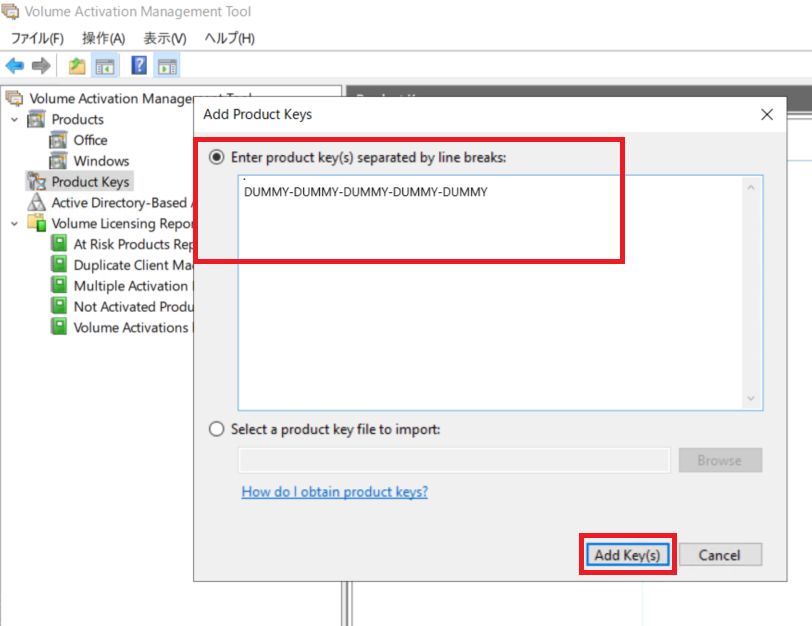
- 次に左ペインにある [Products] > [Windows] を選択し、右クリックメニューから [Discover products…] を押下します。
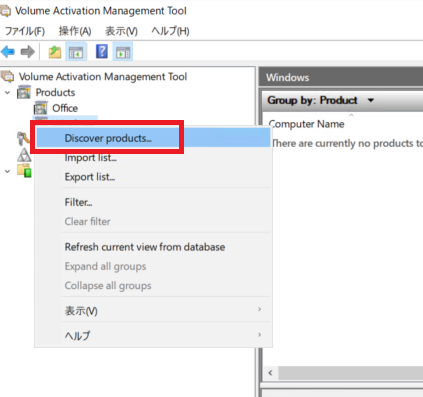
- 表示されたウインドウにてプルダウンメニューから ESU キーのインストールを行うクライアントの検索方法を選択し、検索句を入力後、 [Search] を押下して検索を行います。
例1) ドメインに参加しているコンピューターを検索する場合
(ドメイン名: testDomain.com / コンピューター名: 対象のコンピューターが例えば “WIN10” から始まる場合 “WIN10*” で検索対象をフィルターすることが出来ます。)
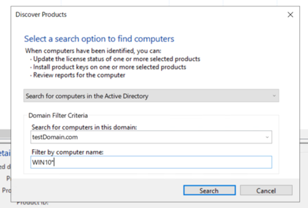
例2) 個々のコンピューター名や IP アドレスで検索する場合
(画像では “WIN10PC” という名称のコンピューターを追加したい場合の入力例)
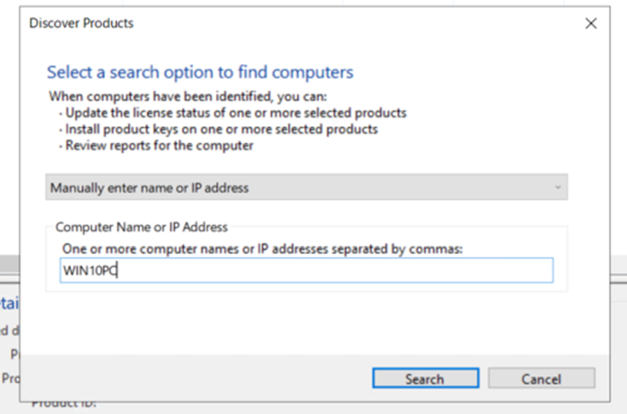
利用可能な検索方法などにつきましては下記弊社公開情報もご参照ください。
- 参考情報
タイトル: コンピューターの追加と削除
URL: https://learn.microsoft.com/ja-jp/windows/deployment/volume-activation/add-remove-computers-vamt
- 検索に成功した場合、以下のようなダイアログが表示されます。
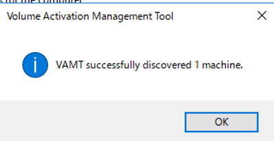
- コンピューターが追加されましたら、クライアントの情報を収集するために追加されたコンピューターを選択し、右クリックメニューから [Update license status] > [Current credential] もしくは [Alternate credential…] を押下します。
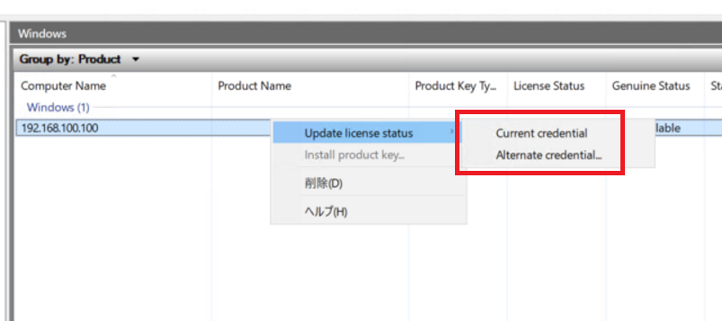
※ [Current credential] と [Alternate credential…] について
VAMT を使用している端末にログオンしているユーザーが、クライアント端末の Administrators グループ (ローカル管理者権限) のユーザーである場合は、[Current credential] をクリックします。
VAMT を使用している端末にログオンしているユーザーが、クライアント端末の Administrators グループ (ローカル管理者権限) のユーザーではない場合は、[Alternate credential] をクリックすると、ユーザー名とパスワードの入力画面が表示されますので、クライアント端末の Administrators グループ (ローカル管理者権限) のユーザーのユーザー名およびパスワードを入力します。
(ユーザー名 / パスワードの入力画面サンプル)
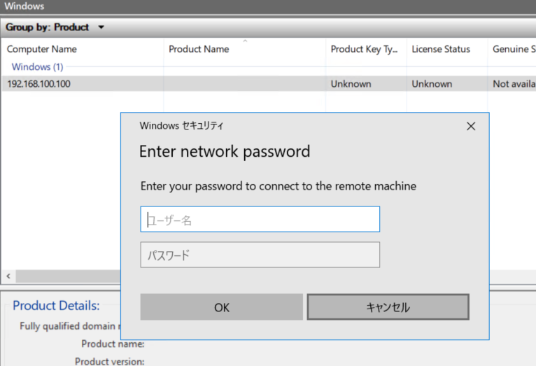
- 以下の画像のように情報収集が完了しましたら [Close] を押下し、ウインドウを閉じます。
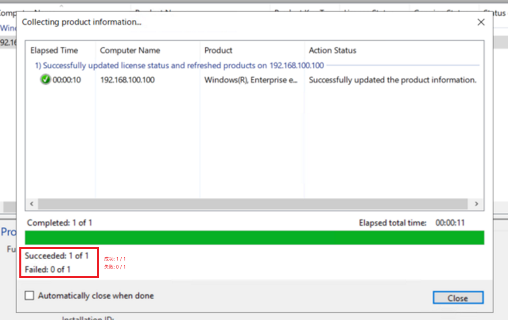
- ESU キーをインストールしたい端末を選択し、右クリックメニューから [Install product key…] を押下します。 (CtrlキーまたはShiftキーを用いて一度に複数選択も可能です。)
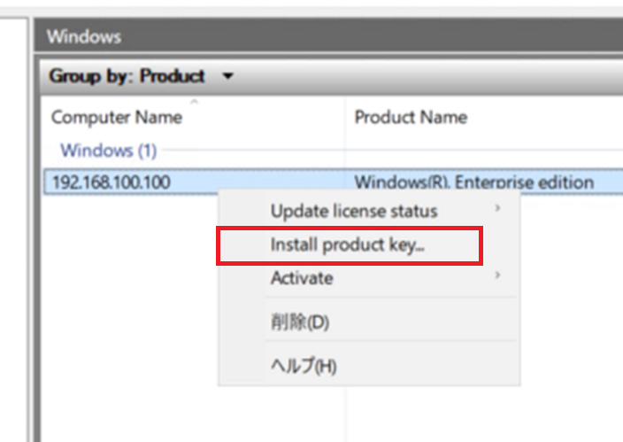
- 表示されたウインドウにてインストールを行う ESU キーを選択し、 [Install Key] を押下します。
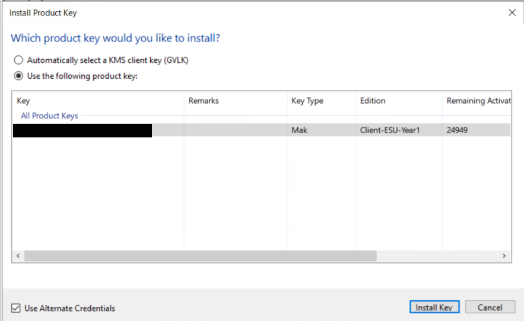
※「8.」 にて [Alternate credential…] を選択した場合は本画面においても左下の [Use Alternate Credentials] にチェックを入れ、 [Install Key] 押下後に表示されるユーザー名とパスワードの入力画面にて、クライアント端末の Administrators グループ (ローカル管理者権限) のユーザーのユーザー名およびパスワードを入力します。
- 以下の画像のようにキーのインストールが完了しましたら [Close] を押下し、ウインドウを閉じます。
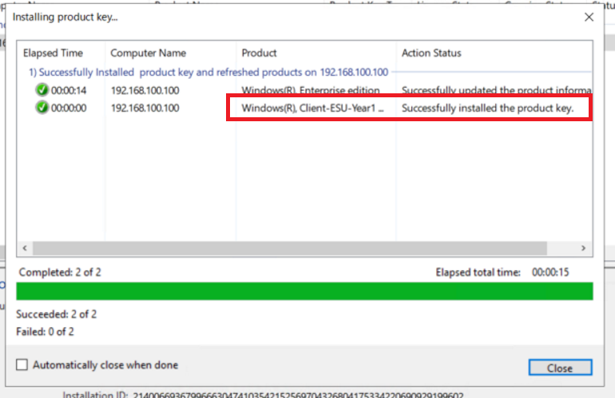
- キーのインストールが完了しましたら、次に認証を行います。認証するクライアントと ESU キーの組み合わせを選択し、右クリックメニューから [Activate] > [Online activate] もしくは [Proxy activate…] を押下します。
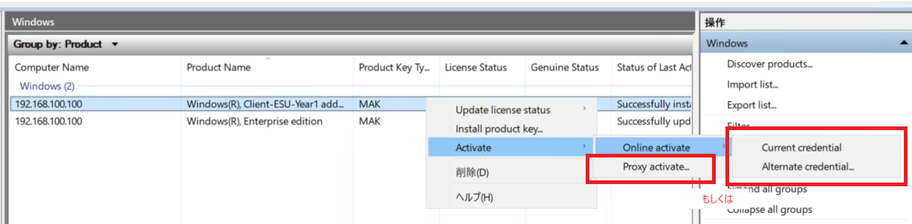
※ [Online activate] と [Proxy activate…] について
該当のクライアントが直接インターネットに接続可能な場合は [Online activate] より [Current credential] もしくは [Alternate credential…] を押下し認証します。
該当のクライアントがインターネットに接続できない場合は代わりに VAMT にて代理 (Proxy) で認証を行うために [Proxy activate…] を押下します。
- ([Proxy activate…] を押下した場合のみ) 表示されたウインドウにて [Acquire confirmation ID, apply to selected machine(s) and activate] のラジオボタンを選択し、 [OK] を押下します。
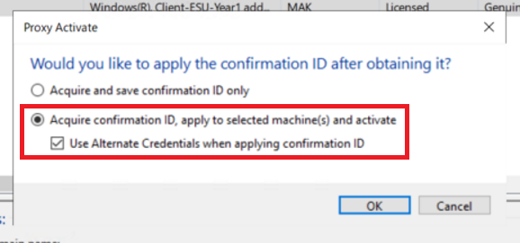
※「8.」 にて [Alternate credential…] を選択した場合は本画面においても [Use Alternate Credentials when applying confirmation ID] にチェックを入れ、 [OK] 押下後に表示されるユーザー名とパスワードの入力画面にて、クライアント端末の Administrators グループ (ローカル管理者権限) のユーザーのユーザー名およびパスワードを入力します。
- [Online activate] の場合はウインドウが 1 回、 [Proxy activate…] の場合は 2 回ウインドウが表示されますので、それぞれ処理が完了しましたら [Close] を押下します。
[Online activate] の場合)
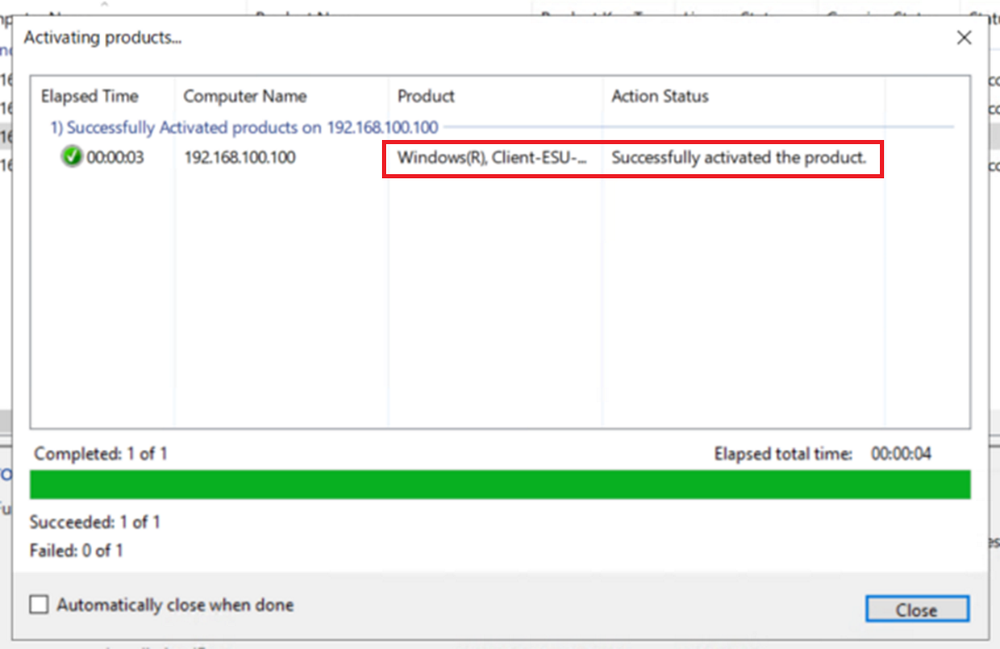
[Proxy activate…] の場合)
●1 回目 (Confirmation ID の 取得)
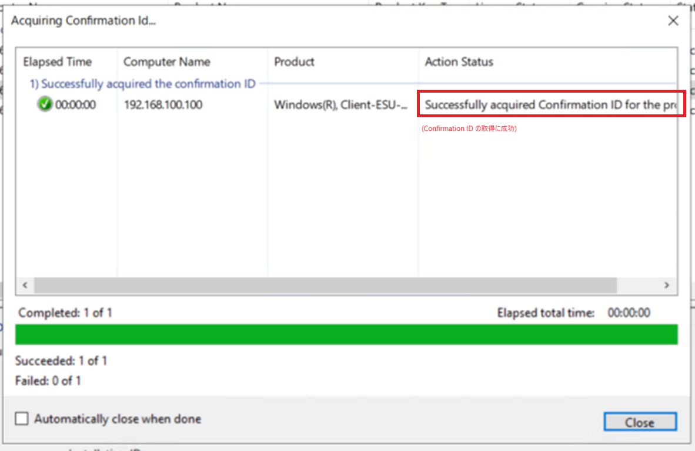
●2 回目 (取得した Confirmation ID のクライアントへの適用)
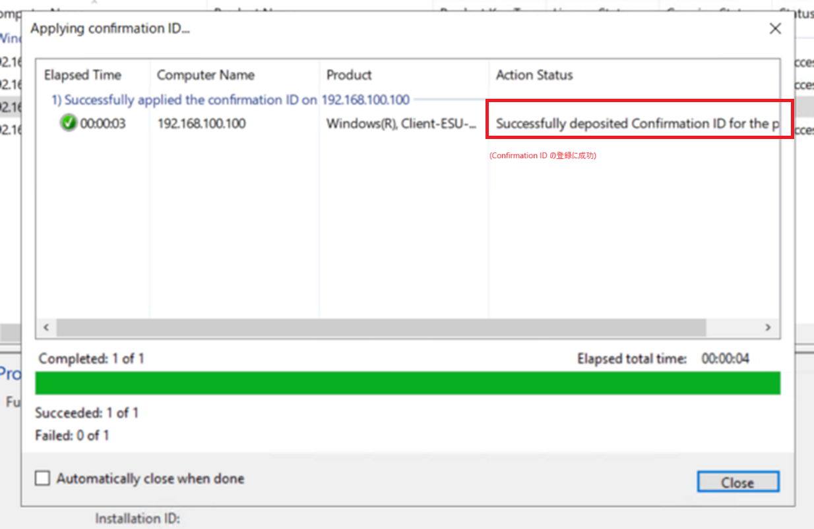
※ [Automatically close when done] にチェックを入れることでウインドウを自動で閉じることも可能です。
- 認証が完了し、インストールした ESU キーについて [License Status] 列が “Licensed” となっていることを確認します。
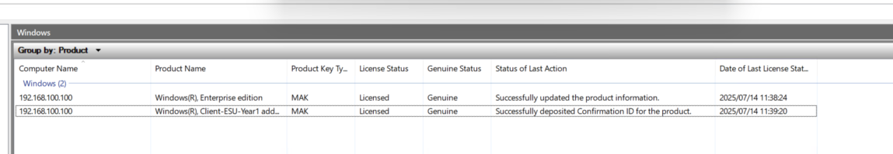
これにて ESU の適用が完了となります。
▼参考
手順完了後の端末の状態 (slmgr /dlv の結果)
端末側でも ESU Year1 のキーが “ライセンスされています” になっていることが確認できる。
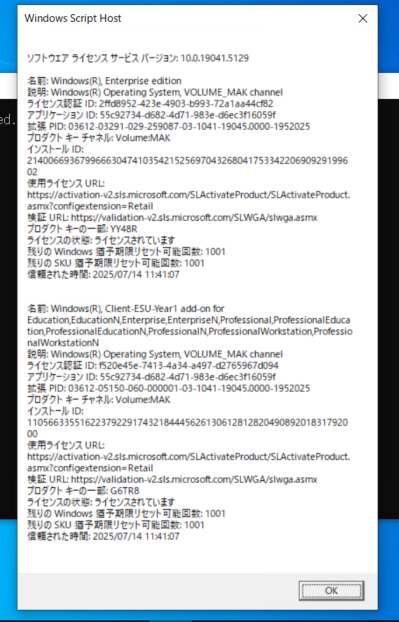
Intune で複数の端末に対して、ライセンスキーを配布可能ですか？
はい、Intune Win32 アプリもしくは PowerShell スクリプトの修復にて ESU ライセンスキーを配布することが可能です。
具体的なやり方については、以下の情報をご参考ください。
- Enabling Extended Security Updates (ESU) for Windows 10 with Intune
https://techcommunity.microsoft.com/blog/coreinfrastructureandsecurityblog/enabling-extended-security-updates-esu-for-windows-10-with-intune/4420182
KMS ホストで ESU を認証可能ですか？
ESU は MAK キーによる認証方式となっているため、KMS ホストでは認証できません。
ESU サポートの開始日はいつですか？
ESU サポートの開始日は 2025 年 10 月 14 日です。（Windows 10 のサポート終了日と同じ日です。）
https://learn.microsoft.com/en-us/lifecycle/faq/extended-security-updates#esu-availability-and-end-dates
更新履歴
2025/09/30 : 本ブログの公開
2025/10/06 : Azure VMware Solution (Nutanix など) に ESU の適用が必要であることを明記
2025/11/14 : Azure VMware Solution (Nutanix など) 、プラットフォームによって ESU の適用が必要であることに変更
2025/12/11 : 新しい電話認証手順を引用。ESU 認証に必要なエンドポイントを追加。